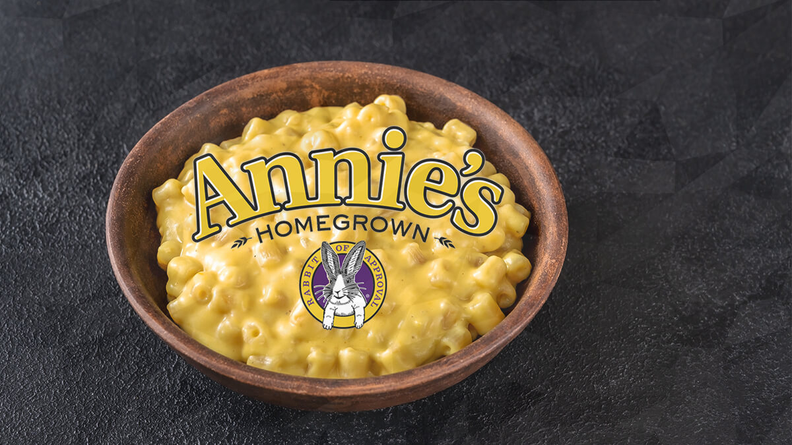

Macaroni and Cheese (box)

Description
One of my kids favorite meals is simply Annies boxed Macaroni and Cheese. I prefer this brand to the Kraft brand. The cheese sauce is more smooth and doesnt take as long to get the clumps out like the other brands I have tried.
This is a very simple recipe which means you can have dinner ready quickly without a lot of extra work or worry.
Ingredients
- 1 Box of Annies Macaroni and Cheese (any flavor)
- butter
- milk
Steps
- Step 1: Follow the instructins on the box to cook your macaroni. You can salt the water before cooking the pasta if you choose.
- Step 2: After the macaroni is cooked, drain and put the pasta aside. Put the pot back on the stove with the heat off
- Step 3: Add 4 tablespoons of butter to the still warm pan and let melt.
- Step 4: Add 1/4 cup of milk and the packet of cheese in the box.
- Step 5: Mix until thouroughly combined.
- Step 6: Mix in pasta until completely covered in sauce.
- Step 7: Serve and enjoy!